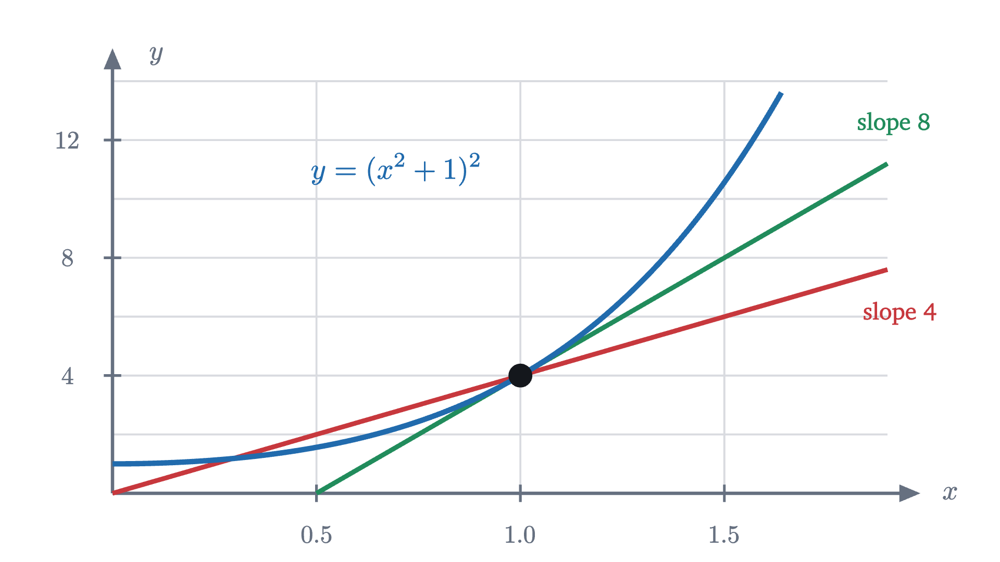

The product rule and the chain rule, seen
A rectangle whose sides both change explains the product rule, and a nudge passed along a chain of number lines explains the chain rule. Both are then proved.
AssumesWhat is a derivative? Speed at a single instantWhy the derivative of x² is 2x: the power rule from pictures
Here is a rule that looks as if it ought to be true. The derivative of a sum is the sum of the derivatives, so surely the derivative of a product is the product of the derivatives.
Test it on the simplest product there is, $x \cdot x$. Each factor is $x$, whose derivative is 1, so the proposed rule gives $1 \cdot 1 = 1$. But $x \cdot x$ is $x^2$, and its derivative is $2x$. The proposed rule is wrong for every $x$ except $\frac{1}{2}$, and wrong in kind: it produced a constant where the true answer grows.
So products need their own rule, and so does the other basic way of building functions, which is to feed the output of one into another, as in $(x^2+1)^2$ or $\sqrt{x^2 + 9}$. This lesson finds both rules from pictures and then proves them. With them, and the power rule from last time, you can differentiate any function built from powers by adding, multiplying and composing.
What we are working from
Two things carry over from earlier lessons. The first is the definition: the derivative of $f$ at $a$ is
the limit of the change in output divided by the change in input, when that limit exists (lesson 1). When it does we say $f$ is differentiable at $a$, and one consequence proved there is that $f$ is then continuous at $a$: $f(a+h) \to f(a)$ as $h \to 0$. The second is the power rule, $(x^n)' = n x^{n-1}$, together with the fact that sums and constant multiples are differentiated term by term.
Throughout, I will write $\Delta f$ for the change $f(a+h) - f(a)$ in a function when its input changes from $a$ to $a + h$. The difference quotient is then $\Delta f / h$.
A rectangle with two changing sides
Last lesson explained the derivative of $x \cdot x$ with a square whose side grows: the area gains two strips and a corner, and the two strips are the $2x$. That square is a product in which both factors happen to be the same. For a general product $f(x)\,g(x)$, draw a rectangle of width $f(x)$ and height $g(x)$, so that the product is its area, and let $x$ change.
To have numbers to look at, take $f(x) = x^2$ and $g(x) = x + 1$, and start at $x = 2$. The rectangle is $4$ wide and $3$ tall, with area 12. Now increase $x$ to $2.1$. The width becomes $2.1^2 = 4.41$ and the height becomes $3.1$.
Pause and try
Find the gain in area when $x$ goes from 2 to 2.1 by adding up three pieces: the strip added on the right, the strip added on top, and the corner between them. Check the total against $4.41 \times 3.1$. What is the difference quotient?
Show answerHide answer
The width grew by $\Delta f = 0.41$ and the height by $\Delta g = 0.1$. The strip on the right is as tall as the old rectangle, so its area is $3 \times 0.41 = 1.23$. The strip on top is as wide as the old rectangle, so its area is $4 \times 0.1 = 0.4$. The corner is $0.41 \times 0.1 = 0.041$. The total gain is $1.671$, and indeed $4.41 \times 3.1 = 13.671 = 12 + 1.671$. The difference quotient is $1.671 / 0.1 = 16.71$.
The figure below does the same bookkeeping for three values of $h$.
The difference quotients are $19.75$, then $16.71$, then $16.07$, and they appear to be approaching 16. We can confirm that with tools we already have, because this particular product multiplies out: $x^2(x+1) = x^3 + x^2$, whose derivative is $3x^2 + 2x$, and at $x = 2$ that is $12 + 4 = 16$.
Now look at how the 16 is assembled in the figure. The strip on the right has area $g \cdot \Delta f$: the height of the old rectangle times the change in width. Per unit of $h$ it contributes $g \cdot \frac{\Delta f}{h}$, and as $h \to 0$ the quotient $\frac{\Delta f}{h}$ approaches $f'(2) = 4$, so this strip contributes $3 \times 4 = 12$. The strip on top has area $f \cdot \Delta g$ and contributes $f \cdot g'(2) = 4 \times 1 = 4$. The corner has area $\Delta f \cdot \Delta g$, and it is small in two directions, so it contributes nothing in the limit. That leaves $12 + 4 = 16$.
This also shows what was wrong with the guess $f' \cdot g'$. That expression is what the corner contributes, $\frac{\Delta f}{h} \cdot \frac{\Delta g}{h}$, if you forget that the corner’s area has to be divided by $h$ only once. The guess keeps the one piece that vanishes and discards the two that matter.
The product rule, stated and proved
The hypotheses ask for exactly what the picture used: each side must have a rate of change at $a$. The proof is the picture written in symbols, including the step where the corner is shown to vanish. Nothing in it needs the sides or their changes to be positive.
The one place where care was needed is the corner term. It is the product of $\frac{\Delta f}{h}$, which stays near $f'(a)$, and $\Delta g$, which goes to 0. Continuity of $g$ is the exact form of “the corner is small in two directions”.
The rule does not care whether the sides are growing. Suppose a rectangle is 4 wide and 3 tall, its width is increasing at 2 units per second, and its height is decreasing at 1 unit per second. The product rule gives the rate of change of its area as $2 \cdot 3 + 4 \cdot (-1) = 2$ square units per second: the strip gained on the right is worth more than the strip lost from the top.
After a time $t$ the area is $(4 + 2t)(3 - t) = 12 + 2t - 2t^2$, so the average rate over the first $t$ seconds is $2 - 2t$, with limit 2 as predicted. In the picture the blue strip is slightly shorter than the old height, and the missing piece is the corner, now entering with a negative sign.
Functions inside functions
The other way to build a function is to chain two together. To compute $(x^2 + 1)^2$ you first compute $u = x^2 + 1$ and then square the result. In general a composite function is $f(g(x))$: an inner function $g$ turns $x$ into an intermediate value $u = g(x)$, and an outer function $f$ turns $u$ into the final value $y = f(u)$.
Start with the simplest case, where both links are multiplications by a constant. Let $u = 3x$ and $y = 2u$.
Pause and try
If $x$ increases steadily by 1 unit per second, how fast does $u$ change? How fast does $y$ change? Write $y$ directly in terms of $x$ and confirm.
Show answerHide answer
$u = 3x$ changes 3 times as fast as $x$, so 3 units per second. $y = 2u$ changes twice as fast as $u$, so 6 units per second. Directly, $y = 2(3x) = 6x$, whose derivative is 6. The rates multiplied.
For constant multipliers, then, the derivative of the chain is the product of the derivatives of the links. The difficulty with a function such as $x^2$ is that it does not multiply by any one number. To extend the idea we need to read a derivative as a multiplier that depends on where you are.
Take the inner function $u = x^2$ and watch what it does to a short interval of inputs.
Near $x = 0.5$ the function sends an interval to one of about the same length. Near $x = 1$ it roughly doubles lengths, and near $x = 1.5$ it roughly triples them. This is the derivative seen as a local stretch factor: for inputs near $a$, a function $g$ multiplies small displacements by approximately $g'(a)$, because $\Delta g / h$ is close to $g'(a)$ when $h$ is small. That is the same fact as “the graph looks like a line of slope $g'(a)$ under magnification”, told without the graph.
Read this way, a chain of two functions is two stretches in a row, and the only question is which stretch factors to use.
A nudge passed along the chain
Take $y = (x^2 + 1)^2$, with inner function $u = g(x) = x^2 + 1$ and outer function $y = f(u) = u^2$, and start at $x = 1$. Then $u = 2$ and $y = 4$.
Pause and try
Nudge $x$ from 1 to 1.1. Compute the new $u$ and the new $y$. By what factor is the change in $u$ larger than the change in $x$? By what factor is the change in $y$ larger than the change in $u$? And the change in $y$ compared with the change in $x$?
Show answerHide answer
The new $u$ is $1.1^2 + 1 = 2.21$, so $\Delta u = 0.21$, which is $2.1$ times $\Delta x = 0.1$. The new $y$ is $2.21^2 = 4.8841$, so $\Delta y = 0.8841$, which is $0.8841 / 0.21 = 4.21$ times $\Delta u$. Overall $\Delta y / \Delta x = 8.841$, and $2.1 \times 4.21 = 8.841$ exactly, because $\frac{\Delta y}{\Delta x} = \frac{\Delta u}{\Delta x} \cdot \frac{\Delta y}{\Delta u}$ is just arithmetic with fractions.
With a nudge of $0.02$ the two factors are $2.02$ and $4.04$, and their product is $8.16$. As the nudge shrinks, the first factor approaches the derivative of the inner function at $x = 1$, which is $g'(1) = 2 \cdot 1 = 2$. The second factor approaches the derivative of the outer function, and here is the point that needs attention: the outer function is being nudged at $u = 2$, where it is working, and its derivative there is $f'(2) = 2 \cdot 2 = 4$. It would be a mistake to evaluate $f'$ at $x = 1$. So the derivative of the chain at $x = 1$ should be $2 \times 4 = 8$.
We can check, since this composite also multiplies out: $(x^2+1)^2 = x^4 + 2x^2 + 1$, with derivative $4x^3 + 4x$, which is 8 at $x = 1$.
The chain rule, stated and proved
In Leibniz notation, with $u = g(x)$ and $y = f(u)$, the same statement reads
where $\frac{dy}{du}$ is evaluated at $u = g(x)$. Written this way the rule looks like cancelling $du$, and the calculation in the last exercise suggests a proof along those lines: for nonzero changes, $\frac{\Delta y}{\Delta x} = \frac{\Delta y}{\Delta u} \cdot \frac{\Delta u}{\Delta x}$ exactly, so take limits of both factors.
That argument has a gap. It divides by $\Delta u = g(a+h) - g(a)$, and nothing prevents $\Delta u$ from being 0 for some nonzero $h$, even for arbitrarily small ones. If $g$ is a constant function, $\Delta u$ is always 0 and the “proof” divides by zero at every step, although the theorem is plainly true for it. The repair is to avoid the division by building a function that already knows what value to take when $\Delta u = 0$.
The function $Q$ is the stretch factor of $f$ over a displacement $k$ from $b$, extended by its limiting value when the displacement is zero. Each clause of the theorem was used: differentiability of $g$ gave both the limit of $k/h$ and the fact that $k \to 0$, and differentiability of $f$ at $b$ gave the limit of $Q$.
That last hypothesis is where the rule can fail to apply. Take $f(u) = |u|$ and $g(x) = x$ at $a = 0$: the composite is $|x|$, which has no derivative at 0, and the theorem does not claim one, since $f$ is not differentiable at $b = 0$. On the other hand, with $f(u) = |u|$ and $g(x) = x^2$ the composite is $x^2$, which is differentiable at 0 even though the hypothesis still fails. When a hypothesis fails the theorem is silent, and you have to go back to the definition.

Using both rules together
Most functions you will meet are built by several operations, and differentiating them means applying the rules from the outside in: decide what the last operation is, apply its rule, and repeat on the pieces.
What to keep
Both rules come from asking what happens to each part of a construction when the input is nudged, and then deciding which effects survive division by $h$. For a product, each factor’s change is multiplied by the full size of the other factor, and the two effects add. For a chain, each link multiplies the nudge it receives, and the effects multiply. The proofs showed that everything left over (the corner, and the gap between a stretch factor and its limit) goes to zero.
The next lesson needs a derivative that no rule so far can produce, that of $\sin\theta$, and finds it by nudging a point on a circle.
Check yourself
Let $y = (3x + 1)^4$. What is $\dfrac{dy}{dx}$ at $x = 1$?
Problems
Work these on paper before opening the solutions. The first three are direct applications, the next two ask you to combine or extend the rules, and the last two are proofs.
Problem 1
Differentiate $x^3(2x + 5)$ in two ways: with the product rule, and by multiplying out first. Confirm that the answers agree.
Show solutionHide solution
Product rule: $3x^2(2x + 5) + x^3 \cdot 2 = 6x^3 + 15x^2 + 2x^3 = 8x^3 + 15x^2$. Multiplying out: $x^3(2x+5) = 2x^4 + 5x^3$, with derivative $8x^3 + 15x^2$. They agree.
Problem 2
Differentiate (a) $(x^3 - 1)^5$; (b) $\dfrac{1}{x^2 + 1}$, by treating it as $u^{-1}$ with $u = x^2 + 1$.
Show solutionHide solution
(a) Outer function $u^5$, inner function $u = x^3 - 1$: the derivative is $5(x^3 - 1)^4 \cdot 3x^2 = 15x^2(x^3-1)^4$. (b) The outer function $u^{-1}$ has derivative $-u^{-2}$, and the inner derivative is $2x$, so the derivative is $-\dfrac{2x}{(x^2+1)^2}$. The chain rule applies at every $x$ because $x^2 + 1$ is never 0.
Problem 3
A rectangle is 5 cm wide and 3 cm tall. Its width is growing at 2 cm/s and its height is shrinking at 1 cm/s. Is its area increasing or decreasing at this moment, and how fast? Describe the two strips.
Show solutionHide solution
With width $w$ and height $\ell$, the product rule gives $\frac{d}{dt}(w\ell) = w'\ell + w\ell' = 2 \cdot 3 + 5 \cdot (-1) = 1$ cm²/s. The area is increasing at 1 square centimeter per second. The strip gained on the right is 3 cm tall and thickens at 2 cm/s, adding 6 cm²/s. The strip lost from the top is 5 cm wide and is removed at 1 cm/s, taking away 5 cm²/s.
Problem 4
Use the chain rule to show that if $g$ is differentiable at $a$ and $g(a) \neq 0$, then $\dfrac{1}{g}$ has derivative $-\dfrac{g'(a)}{g(a)^2}$ at $a$. Then combine this with the product rule to obtain the quotient rule: $\left(\dfrac{f}{g}\right)'(a) = \dfrac{f'(a)g(a) - f(a)g'(a)}{g(a)^2}$.
Show solutionHide solution
Write $\frac{1}{g(x)}$ as $r(g(x))$ with outer function $r(u) = u^{-1}$, which is differentiable at every $u \neq 0$ with $r'(u) = -u^{-2}$. Since $g(a) \neq 0$, the chain rule applies and gives $\left(\frac{1}{g}\right)'(a) = -\frac{1}{g(a)^2} \cdot g'(a)$. Now $\frac{f}{g} = f \cdot \frac{1}{g}$, so by the product rule
after putting both terms over the common denominator $g(a)^2$.
Problem 5
Find a rule for the derivative of a product of three functions, $(fgh)'$, by applying the product rule twice. Then set $f = g = h = x$ and explain what each term is in the picture of a growing cube.
Show solutionHide solution
Group the product as $(fg) \cdot h$. Then $(fgh)' = (fg)'h + (fg)h' = (f'g + fg')h + fgh' = f'gh + fg'h + fgh'$. Each term differentiates one factor and leaves the other two alone. With $f = g = h = x$ every term is $1 \cdot x \cdot x = x^2$, and the sum is $3x^2$, the derivative of $x^3$. In the growing cube, each term is one slab: the side that is differentiated is the direction in which the slab is thin, and the two untouched factors are the dimensions of its face.
Problem 6
Give a new proof of the power rule $(x^n)' = n x^{n-1}$ for every integer $n \ge 1$, by induction on $n$, using the product rule.
Show solutionHide solution
For $n = 1$, the function is $x$ and its difference quotient is $\frac{(a + h) - a}{h} = 1$, so its derivative is $1 = 1 \cdot x^0$. Suppose the rule holds for some $n \ge 1$, so that $x^n$ is differentiable with derivative $n x^{n-1}$. Write $x^{n+1} = x \cdot x^n$. Both factors are differentiable, so by the product rule
which is the rule for $n + 1$. By induction it holds for all $n \ge 1$.
Problem 7
Let $p$ and $q$ be positive integers and let $y = x^{p/q}$ for $x > 0$, so that $y^q = x^p$. Assuming that $y$ is a differentiable function of $x$, differentiate both sides of $y^q = x^p$ and solve for $\frac{dy}{dx}$. Show that the result is the power rule with exponent $\frac{p}{q}$.
Show solutionHide solution
The left side is a chain: the outer function is $u^q$ and the inner function is $y$, so its derivative with respect to $x$ is $q\,y^{q-1}\frac{dy}{dx}$. The right side has derivative $p\,x^{p-1}$. Two equal functions have equal derivatives, so $q\,y^{q-1}\frac{dy}{dx} = p\,x^{p-1}$, and since $y > 0$ we may divide:
Now $y^{q-1} = x^{(p/q)(q-1)} = x^{p - p/q}$, so $\frac{x^{p-1}}{y^{q-1}} = x^{p - 1 - p + p/q} = x^{p/q - 1}$. Hence $\frac{dy}{dx} = \frac{p}{q}\,x^{p/q - 1}$, which is the power rule with $r = \frac{p}{q}$. The argument assumed differentiability of $y$; that assumption is justified by a theorem on inverse functions, which is outside this lesson.